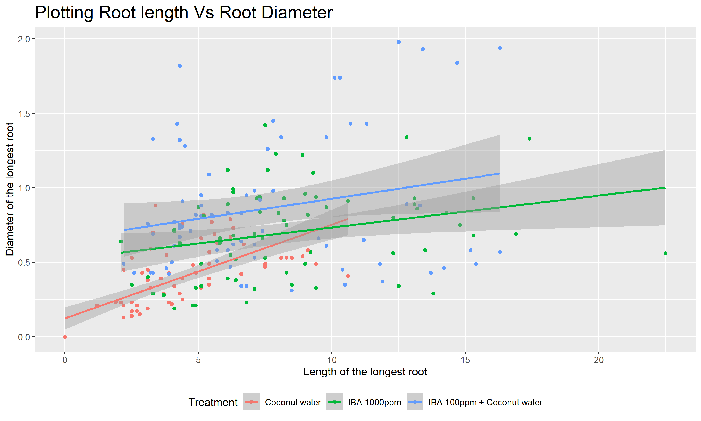

library(tidyverse)
library(gt)1 Effect of Treatments on leaves to produce roots
An experiment was conducted to find the rooting potential of the leaves mainly angiosperms to root when treated with different phyto-hormones.
- In the experiment, 4 treatments were applied on 8 different species, and the observations included:
- Number of roots (
num_roots_n). - Length of the longest root in centimeters (
lng_long_root_cm). - Diameter of the longest root in millimeters (
dia_long_root_mm).
- Number of roots (
Loading Required packages
Loading the data and formatting
The data is loaded as a dataframe thesisdata and columns such as treatments(Treatment) and species(Species) are changes to factors as they are not suitable as strings.
# Loading data
thesisdata <- read_csv("thesisdata.csv",
show_col_types = FALSE)
# formating data
ths_data <- thesisdata
ths_data$Treatment <- as.factor(ths_data$Treatment)
ths_data$Treatment <-
factor(ths_data$Treatment,levels = c("Control",
"Coconut water",
"IBA 1000ppm",
"IBA 100ppm + Coconut water"))
ths_data$Species <- factor(ths_data$Species)
ths_data %>% head()# A tibble: 6 × 5
Species Treatment num_roots_n lng_long_root_cm dia_long_root_mm
<fct> <fct> <dbl> <dbl> <dbl>
1 Conidium verigatum Control 0 0 0
2 Conidium verigatum Control 0 0 0
3 Conidium verigatum Control 0 0 0
4 Conidium verigatum Control 0 0 0
5 Conidium verigatum Control 0 0 0
6 Conidium verigatum Control 0 0 0- Confirming that only 8 species and 4 treatments are used in the experiment.
treatments_and_species <- list(unique(ths_data$Treatment), unique(ths_data$Species))
names(treatments_and_species) <- c("Treatment", "Species")
treatments_and_species$Treatment
[1] Control Coconut water
[3] IBA 1000ppm IBA 100ppm + Coconut water
Levels: Control Coconut water IBA 1000ppm IBA 100ppm + Coconut water
$Species
[1] Conidium verigatum Rawolfia tetraphylla Justicia Sps
[4] Zizupus rugosa Jasminum Sps Cyclea pelteta
[7] Bredelia scandens Hemigraphis alternata
8 Levels: Bredelia scandens Conidium verigatum ... Zizupus rugosa1.1 Aggregating data and formatting the results into a table.
The data is aggregated in Table 1 by the average of root lengths with standard deviation(SD)
ths_data_1 <- ths_data %>% group_by(Species, Treatment) %>%
summarise(avg_n_roots = mean(num_roots_n),
SD_n_roots = sd(num_roots_n),
avg_lng_root = mean(lng_long_root_cm),
SD_lng_root = sd(lng_long_root_cm),
avg_dia_root = mean(dia_long_root_mm),
SD_dia_root = sd(dia_long_root_mm)) %>%
# rounding of to 2 digits
mutate(across(where(is.double), ~round(., digits = 2))) %>%
# combining means and SD into a single column
unite(avg_n_roots_SD, avg_n_roots, SD_n_roots, sep = " \u00b1 ") %>%
unite(avg_lng_root_SD, avg_lng_root, SD_lng_root, sep = " \u00b1 ") %>%
unite(avg_dia_root_SD, avg_dia_root, SD_dia_root, sep = " \u00b1 ") %>%
# using 'gt' package to get a table
gt(rowname_col = "Treatment") %>%
tab_header(
title = "Thesis Data of the Species",
subtitle = "Influence of growth regulators on the root generation"
) %>%
opt_align_table_header(align = "center") %>%
cols_label( # renaming columns
avg_n_roots_SD = md("Mean number of roots \u00b1 SD"), #md is markdown language
avg_lng_root_SD = md("Mean length of longest roots \u00b1 SD (cm)"),
avg_dia_root_SD = md("Mean diameter of longest roots \u00b1 SD (mm)")
) %>% # fixing columns width
cols_width(Treatment ~ px(150),
avg_n_roots_SD ~ px(150),
avg_lng_root_SD ~ px(150),
avg_dia_root_SD ~ px(150),
) %>%
cols_align(align = "center")
ths_data_1| Thesis Data of the Species | |||
|---|---|---|---|
| Influence of growth regulators on the root generation | |||
| Mean number of roots ± SD | Mean length of longest roots ± SD (cm) | Mean diameter of longest roots ± SD (mm) | |
| Bredelia scandens | |||
| Control | 0 ± 0 | 0 ± 0 | 0 ± 0 |
| Coconut water | 0 ± 0 | 0 ± 0 | 0 ± 0 |
| IBA 1000ppm | 3.22 ± 0.44 | 6.06 ± 2.02 | 0.89 ± 0.17 |
| IBA 100ppm + Coconut water | 3 ± 0.5 | 6.02 ± 1.26 | 0.77 ± 0.2 |
| Conidium verigatum | |||
| Control | 0 ± 0 | 0 ± 0 | 0 ± 0 |
| Coconut water | 2.89 ± 1.05 | 4.52 ± 1.1 | 0.62 ± 0.15 |
| IBA 1000ppm | 7.89 ± 3.62 | 7.52 ± 2.55 | 0.76 ± 0.15 |
| IBA 100ppm + Coconut water | 2.44 ± 0.88 | 4.74 ± 1.09 | 0.81 ± 0.18 |
| Cyclea pelteta | |||
| Control | 0 ± 0 | 0 ± 0 | 0 ± 0 |
| Coconut water | 3.33 ± 0.71 | 2.48 ± 0.37 | 0.18 ± 0.04 |
| IBA 1000ppm | 5.22 ± 1.39 | 4.89 ± 1.17 | 0.28 ± 0.07 |
| IBA 100ppm + Coconut water | 8.89 ± 2.03 | 12.64 ± 3.23 | 0.45 ± 0.1 |
| Hemigraphis alternata | |||
| Control | 0 ± 0 | 0 ± 0 | 0 ± 0 |
| Coconut water | 1.11 ± 0.33 | 5.89 ± 0.84 | 0.65 ± 0.11 |
| IBA 1000ppm | 2.22 ± 0.83 | 8.06 ± 1.58 | 0.77 ± 0.11 |
| IBA 100ppm + Coconut water | 1.11 ± 0.33 | 5.33 ± 1.93 | 0.57 ± 0.09 |
| Jasminum Sps | |||
| Control | 0 ± 0 | 0 ± 0 | 0 ± 0 |
| Coconut water | 1.89 ± 0.6 | 8.06 ± 0.88 | 0.5 ± 0.05 |
| IBA 1000ppm | 5.11 ± 1.17 | 14.82 ± 1.59 | 0.88 ± 0.19 |
| IBA 100ppm + Coconut water | 2.67 ± 1.22 | 12.12 ± 2.27 | 1.71 ± 0.25 |
| Justicia Sps | |||
| Control | 0 ± 0 | 0 ± 0 | 0 ± 0 |
| Coconut water | 1.22 ± 0.44 | 3.28 ± 1.24 | 0.35 ± 0.21 |
| IBA 1000ppm | 1.89 ± 0.78 | 8.64 ± 2.41 | 1.08 ± 0.26 |
| IBA 100ppm + Coconut water | 1.22 ± 0.44 | 5.47 ± 1.84 | 1.35 ± 0.23 |
| Rawolfia tetraphylla | |||
| Control | 0.56 ± 1.13 | 0.26 ± 0.51 | 0.04 ± 0.09 |
| Coconut water | 1.78 ± 0.97 | 5.4 ± 2.64 | 0.36 ± 0.1 |
| IBA 1000ppm | 4.78 ± 2.17 | 11.59 ± 4.79 | 0.4 ± 0.12 |
| IBA 100ppm + Coconut water | 2.67 ± 1.41 | 10.09 ± 2.34 | 0.61 ± 0.19 |
| Zizupus rugosa | |||
| Control | 0 ± 0 | 0 ± 0 | 0 ± 0 |
| Coconut water | 1.22 ± 0.83 | 2.94 ± 1.34 | 0.38 ± 0.18 |
| IBA 1000ppm | 4.44 ± 1.59 | 5.56 ± 2.08 | 0.53 ± 0.15 |
| IBA 100ppm + Coconut water | 2.22 ± 0.67 | 4.26 ± 1.11 | 0.63 ± 0.17 |
1.2 Plotting the data for better understanding.
- Plotting a bar graph Figure 1 to see how each treatment performed on each species.
ths_data |> summarise(avg_n_roots = mean(num_roots_n),
avg_lng_root = mean(lng_long_root_cm),
avg_dia_root = mean(dia_long_root_mm),
.by = c(Species, Treatment)) %>%
rename("Mean number of Roots" = avg_n_roots,
"Mean length of Longest root(cm)" = avg_lng_root,
"Mean diameter of Longest roots(mm)" = avg_dia_root) %>%
tidyr::pivot_longer(c("Mean number of Roots", "Mean length of Longest root(cm)",
"Mean diameter of Longest roots(mm)")) |>
ggplot(aes(x = Species, y = value, fill = name)) +
geom_col(alpha = 0.7, position = "dodge") +
facet_wrap(~Treatment, ncol = 2) +
theme_bw() + labs(y = " ", fill = "Parameters",
title = "Effect of treatments on rooting") +
theme(legend.position = "bottom",
axis.text.x = element_text(angle = 45, hjust = 1),
plot.title = element_text(size = 18))- We can clearly see that Control treatment is not producing any roots in majority of the species.
- IBA 1000ppm is clearly showing most promising results in most of the species in the graph.
1.3 Finding correlation
We are going to filter out the control treatment as it is not significant at producing roots at all and plot Figure 2 to find which treatment has better correlation at producing roots with higher diameters.
ths_data |> filter(Treatment!= "Control") |>
ggplot(aes(x = lng_long_root_cm, y = dia_long_root_mm)) +
geom_point(aes(color = Treatment)) +
geom_smooth(method = "lm", aes(group = Treatment, color = Treatment)) +
labs(title = "Plotting Root length Vs Root Diameter",
x = "Length of the longest root",
y = "Diameter of the longest root") +
theme(legend.position = "bottom",
plot.title = element_text(size = 18))`geom_smooth()` using formula = 'y ~ x'

- The graph clearly shows that the
Coconut Watertreatment has the highest slope but other treatments which produced higher root lengths did not have a correlation as that ofCoconut Watertreatment.
1.4 Statistical Analysis
Let’s conduct a anova test on the data after filtering Control as it has not given any roots.
Let H0 be Null hypothesis H1 be Alternate hypothesis
# ANOVA Model
model_anova <- ths_data %>%
filter(Treatment != "Control") %>%
aov(num_roots_n ~ Treatment, data = .)
# Summary
model_anova %>% summary() Df Sum Sq Mean Sq F value Pr(>F)
Treatment 2 256.0 128.00 27.43 2.51e-11 ***
Residuals 213 993.9 4.67
---
Signif. codes: 0 '***' 0.001 '**' 0.01 '*' 0.05 '.' 0.1 ' ' 1# TukeyHSD
model_anova %>% TukeyHSD(conf.level = 0.95) Tukey multiple comparisons of means
95% family-wise confidence level
Fit: aov(formula = num_roots_n ~ Treatment, data = .)
$Treatment
diff lwr upr
IBA 1000ppm-Coconut water 2.666667 1.8169277 3.5164057
IBA 100ppm + Coconut water-Coconut water 1.347222 0.4974832 2.1969612
IBA 100ppm + Coconut water-IBA 1000ppm -1.319444 -2.1691835 -0.4697054
p adj
IBA 1000ppm-Coconut water 0.0000000
IBA 100ppm + Coconut water-Coconut water 0.0006848
IBA 100ppm + Coconut water-IBA 1000ppm 0.0009086We can see from p adj that all the treatments means are different and we can reject the H0 hypothesis. H1 holds at 95% confidence interval.